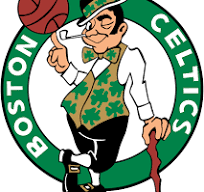
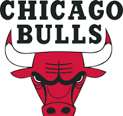
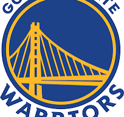
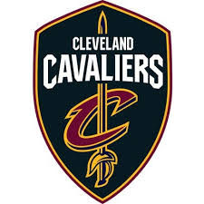
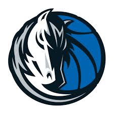

voulez vous bien joué au basket?
voici quelque inforamtion
voulez vous bien joué au basket?
voici quelque inforamtion





voici quelques equipes
j'ai fondé le basket!!!
James Naismith
objectif du jeux: marquer le plus de point en métant la balle dans le cercle
quelque ligue:
C’est le meneur de jeu, le chef d’orchestre de l’équipe. Il remonte la balle en attaque et annonce les tactiques. En plus debonnes capacités de dribble, il doit avoir une excellente vision du jeu pour pouvoir distribuer le ballon à ses coéquipiers. Il doit également être habile et résister à la pression pour prendre des shoots dans les moments importants de la partie.
C’est l’arrière. Son jeu est principalement orienté à l’extérieur de la raquette. Il est aussi bien capable de shooter en pénétrant dans la raquette ou de l’extérieur de la raquette. Il doit avoir des qualités de dribble et de vitesse.
C’est l’ailier. Son jeu est principalement orienté à l’extérieur de la raquette. Il doit faire preuve d’agilité et de rapidité pour shooter à 3 points. Il peut aussi venir aider les intérieurs au rebond. Généralement de grande taille, il doit faire preuve de détente. Ce joueur passe fréquemment d’une position de l’extérieur vers l’intérieur de la raquette ( vice versa).
C’est l’ailier "fort". Il forme avec le pivot le secteur intérieur de la raquette. Son rôle est donc similaire au pivot. Il est généralement plus petit que le pivot mais son gabarit reste tout de même imposant pour récupérer les rebonds. Il peut également évoluer en dehors de la raquette.
C’est le pivot et celui qui présente le plus gros gabarit (grande taille, très musclé). En défense, il se positionne près de son panier et protège le secteur intérieur de la raquette, avec des bonnes capacités au rebond et au contre. En attaque, il est chargé de récupérer les rebonds au de mettre les paniers en lay-up.